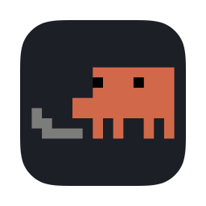
ClawdeA desktop pet that acts out your Claude Code sessions.
Sessions run in windows you are not looking at. Clawde puts one small character above everything else, doing whatever the session that most wants you is doing: typing while it works, asking while it waits on you, dozing when there is nothing to say. Click it and you are in that session.
brew install --cask burakcokyildirim/tap/clawde
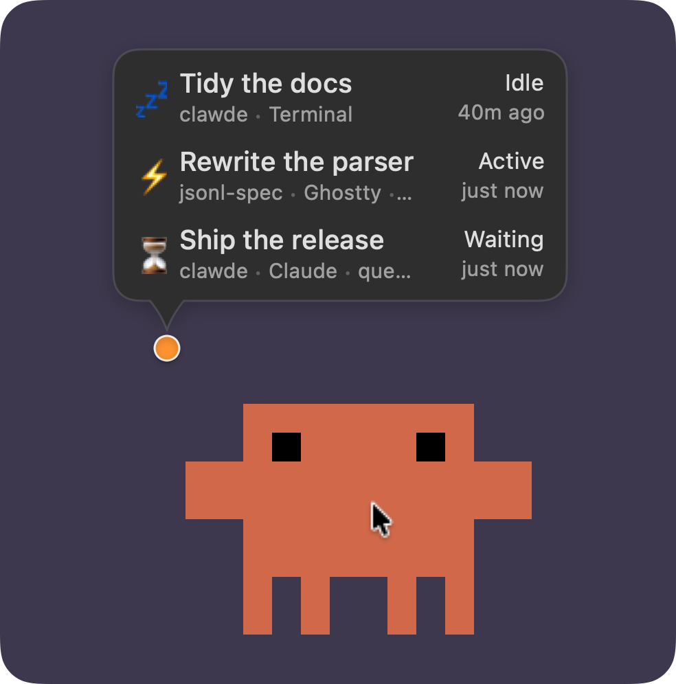
Six moods
It acts out the session
Every mood has its own animation, with an entrance and an exit, so the laptop is never dropped in mid-air. The pet stands for the session that most wants you: one waiting on you first, then an answer nobody has read, then work in progress. It hops when a session takes up something new.
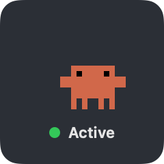
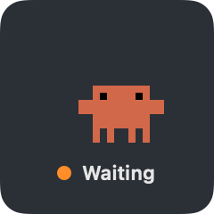
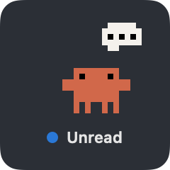
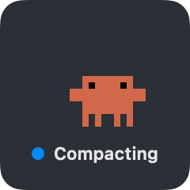
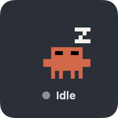
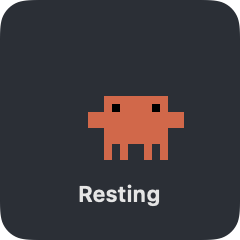
Four characters
Pick one, or draw your own
Each is drawn frame by frame on a 20 × 16 canvas and scaled in whole points per pixel, so the art stays crisp at any size.
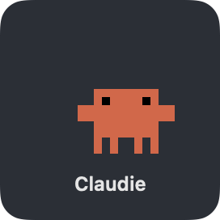
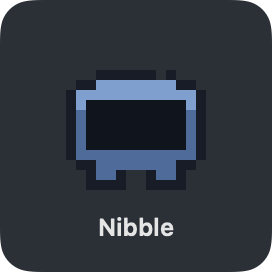
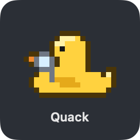
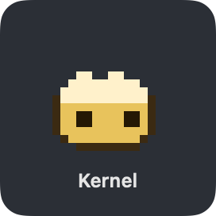
Make your own. A character is one Swift file of pixel art written as letters. Open the repository in Claude Code and run /new-character: it draws one with you, shows you every mood animated and wires it into the app.
A cat that walks across the keyboard, an octopus typing on four keyboards at once, a coffee mug that drains while the context compacts: a few are waiting for someone to draw them.
Menu bar
Every session, one click away
Hover the pet and a bubble lists every session that is doing something; the menu bar has all of them. Click one and Clawde brings it forward: the right tab in iTerm2, Terminal or Ghostty, the right window in VS Code, Xcode or a JetBrains IDE, the right conversation in the Claude desktop app.
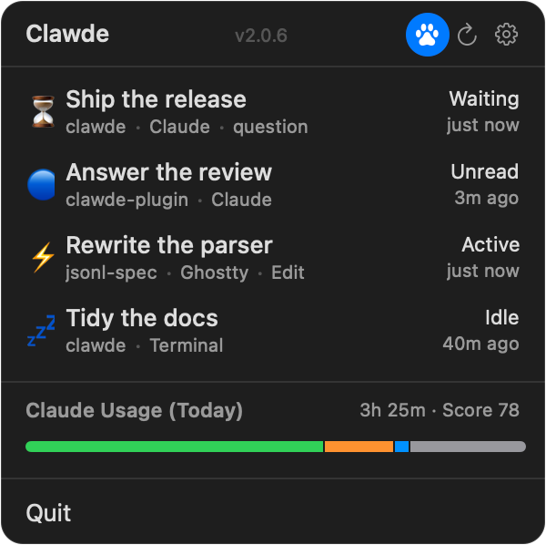
Under the hood
How it knows
- A small plugin
- A Rust daemon per session reads its transcript and writes the state to a file beside it, and the app hears about every change at once.
- Unread, for the desktop app
- For sessions in the Claude desktop app it can tell when Claude has answered and you have not looked yet.
- Next to nothing
- No timer runs while the pet is hidden or covered, and with Reduce Motion on each mood holds a single still frame.
On first launch Clawde offers to install its Claude Code plugin. Sessions report once they start again after that; the README has the details, including the way in for the Claude desktop app.